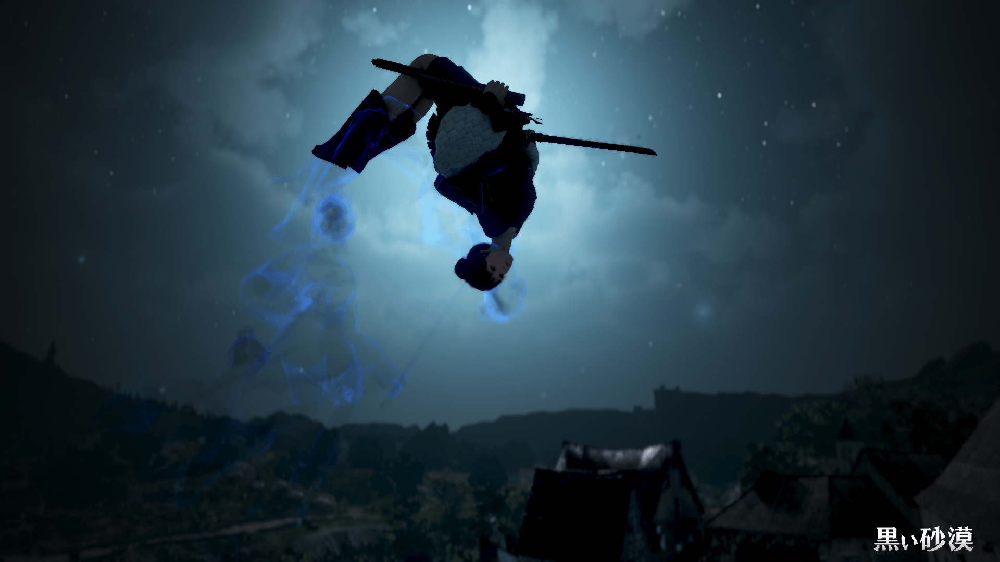
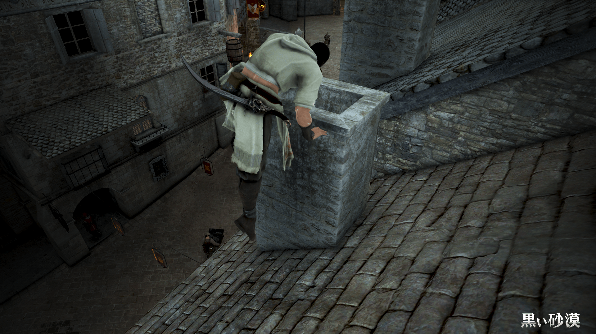
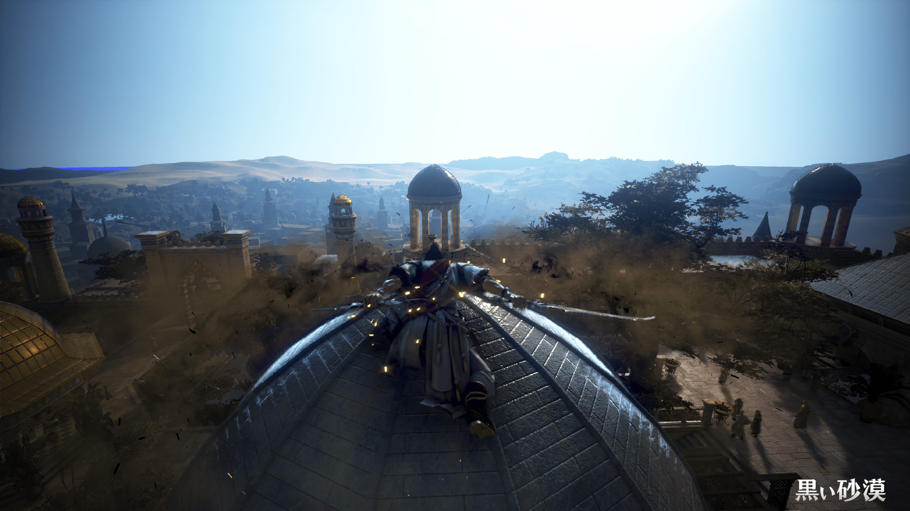

2025.03.02

様々なスキルを使うことで、普通のジャンプでは届かないような場所まで飛び上がることができます。
一部のクラスについて、ジャンプ系のスキルを紹介します。
私の知らない部分もたくさんあるので、いろいろ研究してみてください
全クラス共通のモーションについて少し書いておこうと思います。

オブジェクトに向かってSPACE長押し。
ジャンプの後にも発動するので、なかなかの高さを登れます。

武器を出した状態で
W+SPACE > Lclick（他の攻撃スキルもできるかも）
できない職もあるっぽいです
補助武器は苦無にしましょう！
武器を出し、壁に触れている状態で
SPACE > W+SPACE > Lclick > SPACE > W+SPACE > Lclick...
上昇しつつジャンプを続けるにはジャンプ装備・バフが必要です。
苦無を装備し、武器を出した状態で
SPACE > W+SPACE > S+SPACE > Lclick > Rclick > Lclick
6段目のジャンプ攻撃の後は、ジャンプの出が遅めです。
武器を出した状態で
SPACE > W+SPACE > E
飯綱落としの後はジャンプできません。
あまり使いませんが、昔はよく使っていたので紹介しました！
操作は難しいですが、最も高く跳べる職だと思います
武器を出している状態で
W+SPACE > W+SPACE > Lclick > W+SPACE > Lclick > SHIFT+SPACE > A+SPACE
Lclickの瞬間はキーから指を離します。
SHIFT+SPACE > A+SPACE は、SPACEを押したまま連続で小指と薬指を動かします。
スクショモードにし、武器を出した状態でスローモード中に
A+SPACE > A+SPACE > Rclick > SHIFT+SPACE > A+SPACE > Rclick > SHIFT+SPACE > A+SPACE...
スローモード中はずっとループできます！
こちらも、SHIFT+SPACE > A+SPACE は、SPACEを押したままにするのがポイントです。
また、これをやるときは攻撃速度も盛りましょう！
他にもあるかもしれませんが、私が知っているのはこれくらいなので勘弁してください。
自分で研究してみるのも楽しいと思います